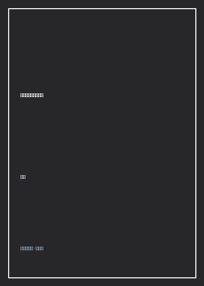

《刘嘉概率论通识讲义》

总体观点
概率论不是单纯的数学计算技巧，而是现代人类看清世界运行本质的最核心底层世界观。我们生活在一个由量子随机性与复杂系统交织的充满不确定性的宇宙中，试图用因果宿命论解释一切，是人类大脑认知偏差与焦虑痛苦的根本来源。
全书以生动的日常案例将概率论的四大基石（随机性、概率度量、贝叶斯更新、大数定律）降维为可落地的决策算法。作者证明，真正的高手从来不追求单次博弈的绝对胜负，而是坚持做'高期望值'的正确选择，利用大数定律让概率在长期维度上站在自己这一边。
刘嘉通过跨学科的认知科学视角阐明：掌握概率论能够赋予我们对抗黑天鹅与周期波动的强大心理韧性（Anti-fragility）。接纳偶然，敬畏未知，持续小步迭代自己的先验信念，是在充满迷雾的现代社会稳步前行的唯一心智底牌。
核心观点
-
1. 克服因果决定论本能：世界本质上是由随机性支配的
人类大脑天生是故事模式机器，喜欢为所有偶然事件强加因果解释；唯有理解纯粹随机性，才能戒除赌徒谬误与事后诸葛亮。
轮盘赌连续开出九次红色后，赌徒们疯狂下注黑色，坚信黑色概率大增，却忽视了每次独立抛球的概率永远是孤立的二分之一。 -
2. 逆概率与贝叶斯更新：像AI一样动态修正你的信念
我们无法掌握全知上帝视角，必须基于最初的先验概率，随着新证据与新信息的出现，利用贝叶斯公式持续修正后验概率。
罕见病筛查假阳性陷阱：某种患病率万分之一的疾病即使试剂准确率高达99%，单次阳性结果下的真实患病概率其实依然不足1%。 -
3. 大数定律的长期主义底牌：在重复博弈中让胜率成为必然
单次尝试的结果可能被运气严重扭曲，但只要博弈次数足够多，最终样本均值必然收敛于客观期望值，时间是正期望值的最好朋友。
优秀的指数基金投资人不在乎单日涨跌红绿，凭借全球经济增长的长期正期望值，在数十年的大数定律复利中稳稳战胜通胀。 -
4. 正态分布与厚尾风险：警惕极端黑天鹅对系统的毁灭性击穿
身高体重遵循均值集中的正态钟形分布，但金融市场与流行病蔓延属于极端不均衡的幂律厚尾分布，一次极端黑天鹅即可清零所有成果。
长期资本管理公司（LTCM）聚集顶尖诺贝尔奖得主，因模型假设市场波动遵循正态分布，在俄罗斯债务违约黑天鹅中百亿美元瞬间灰飞烟灭。 -
5. 凯利公式的下注智慧：永远不要押上让自己下桌的筹码
即使面对胜率极高的机会，下注比例也必须受到严格资金管理法则约束，保留充足的冗余安全边际，才能在牌桌上长久活下去。
利用凯利公式（f* = (bp - q) / b）精确计算资产配置比例，坚决杜绝借贷加杠杆满仓一次性梭哈的自杀行为。
全书结构
-
模块一 概率论的世界观：从宿命论到随机性思维的认知飞跃
梳理从17世纪赌徒分赌注问题引发的概率论起源史，阐述为何概率思维是现代人区隔于古代蒙昧的心智分水岭。
讲述费马与帕斯卡在通信中如何通过数学期望解决未完成赌局的奖金分配，拉开人类理性度量不确定性的历史大幕。 -
模块二 概率的度量：样本空间、古典概型与加法乘法原理
建立严谨的概率计算底层骨架，讲解如何穷举样本空间、区分独立事件与互斥事件，避免排列组合中的直觉盲区。
生日悖论生动演示：一个仅有23人的班级里，有两个人生日相同的概率竟然高达50.7%，打破线性直觉认知。 -
模块三 条件概率与贝叶斯：逆概率推断、先验概率与信息更新
深入拆解贝叶斯定理的几何模型与公式推导，指导如何在信息不完全的动态环境下做出最理性的动态决策与诊断。
以垃圾邮件过滤器的工作原理为例，演示计算机如何通过统计特定词汇在正常邮件与垃圾邮件中的出现频率动态自学习。 -
模块四 随机变量与分布：二项分布、正态分布与极端厚尾陷阱
对比有限离散型随机变量与连续型概率密度函数，剖析中心极限定理如何让无数独立微小随机扰动自然汇聚成优美的正态分布。
高尔顿钉板（Galton Board）实验：成千上万颗小钢珠在穿过层层钉子后，底部槽内无论重复多少次都精准堆叠成钟形曲线。 -
模块五 大数定律与中心极限定理：跨越周期的长期主义底层数学底牌
探讨弱大数定律与强大数定律的数学证明直觉，解释赌场为何无需作弊即可凭借极其微弱的胜率优势稳赚不赔的商业本质。
拉斯维加斯赌场轮盘赌通过多设置一个'00'绿色格子，仅靠2.7%的庄家优势在数以亿计的筹码流转中榨取源源不断的稳固暴利。 -
模块六 现代决策算法：凯利公式、蒙特卡洛模拟与反脆弱性
全书实战应用巅峰，传授如何运用蒙特卡洛计算机随机抽样模拟复杂商业推演，制定胜率、赔率与下注规模的最优匹配策略。
刘嘉总结全书箴言：'用概率的眼光看世界，对成功保持谦卑，对失败报以宽容，在不确定的生活里过出确定的幸福'。